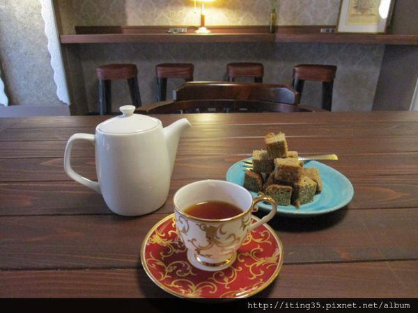
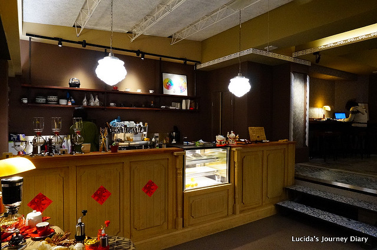

聞山咖啡 臺大店


遠遠就看到聞山咖啡的立牌，墨綠色的木框門面，老門板上的招牌將老咖啡館的靈魂喚醒，不算小的空間呈設，有自家烘焙咖啡與器具的呈列。而店內的空間環境所呈現的是復古典雅的氛圍，從桌椅到復古檯燈等擺飾跟老房子是如此的契合。而店內的咖啡堅持採購最高等級的精品咖啡生豆喜歡喝單品咖啡的人可以在店內品嚐到最新鮮的咖啡，單品咖啡種類多，也可以請店員推薦喜歡的口味。 聞山咖啡採用賽風的方式來出杯, 風味上body會比較強烈, 上次點了一杯甜蜜花茶(咖啡配方豆), 裡頭的花香和甜感至今還是讓我很難忘呢!! 這家店就在台大隔壁的小巷子而已, 台大的朋友們一定要來這家試試XD